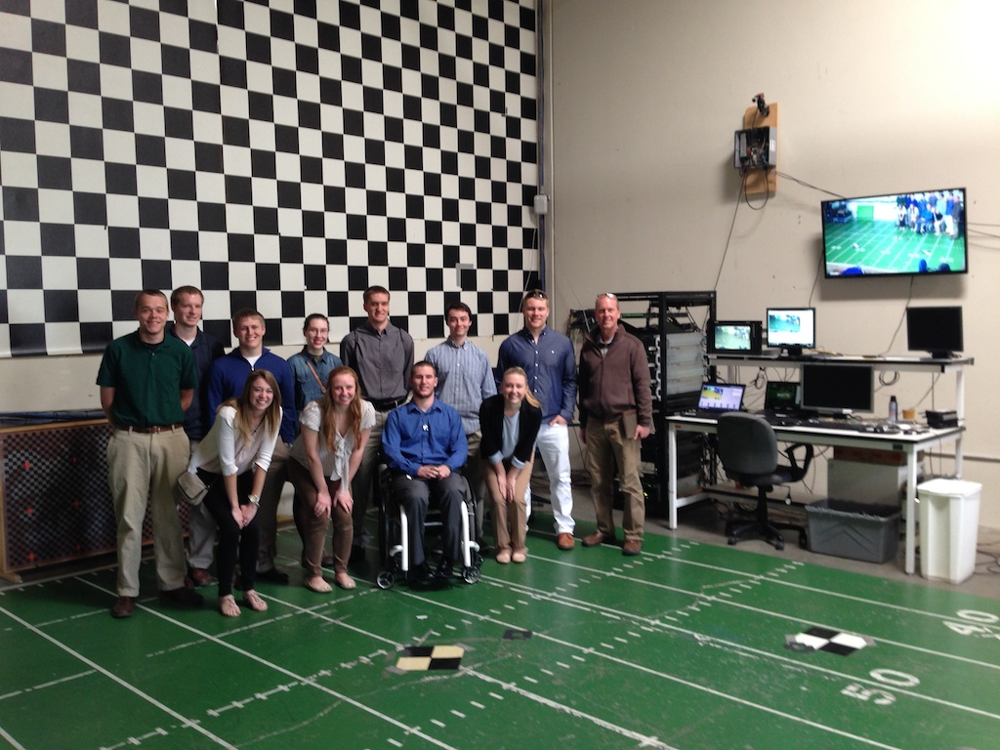
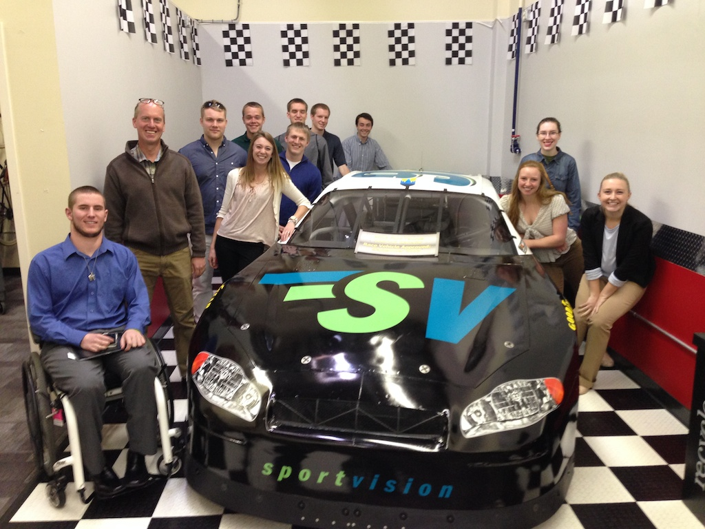

Applied Math and Physics
You know those yellow lines on the football field? They are harder to draw than they look. Think for a minute about all of the different field conditions. Natural green turf, artificial turf, mud, snow, cold brown grass. Now think about all of the different colored uniforms the players wear. Now, look closely. The line never covers up any part of a player, or the ball. Notice that? The ball doesn't have a yellow strip, the ball blocks out the yellow line. The same with players shoes. Today we got to learn about the yellow lines, the blue lines, the down and distance information, and many more cool effects that Sportvision puts on our television screens.

Here's the group on the "practice Field" They were moving the blue and the yellow line for us as we stood there. You can kind of see them on the big screen on the wall. The rack of equipment behind me is what they need to bring to each game, and the computers on the desk are whats used by the operator during the game. The operator can adjust all sorts of parameters based on field conditions and uniform colors etc. In addition, in the case of a really bad snow storm, they can also project all the yard markers on top of the snow so the people at home have a better view of the field than the players.
In addition to football, Sportvision is also a big provider of on screen information for NASCAR and Major League Baseball. In the case of NASCAR they display a box of statistics right above the car as it goes around the track. For Major League Baseball, they show the ball and strike zone, and a bunch of statistics about pitch placement. They also collect statistics about every player on the diamond. They track the ball and the players using an array of cameras placed around the ballpark. Here's where the cool math and physics comes in. Based on the flight of the ball, they compute the spin! The cameras are not good enough yet to track the laces, but with some math, they can provide a visualization of how the ball is spinning! Very cool.
Sportvision is looking at lots of sports, and looking at newer ways to get more information about every player. For example Football players may have special chips embedded in their shoulder pads someday in the future. NASCAR cars already have a special box in them that tracks all kinds of information for Sportvision, Soccer players are not likely to have any special chips as it would likely inhibit their play, unless something could be put in their shoes.

Like most of the companies we have met with Big Data is an important part of Sportvision's future plans. Right now their main customers are the television networks, but in the future individual teams will pay for data. One interesting aspect of the big data strategy for Sportvision is that they don't have to productize the analytics part of it. The reason is because most teams just want the data, and they consider the analytics to be a competitive advantage. This doesn't mean that Sportvision won't productize some analysis software, because there is a market at the college level and below where teams can't afford to pay for their own data scientists.
Comments